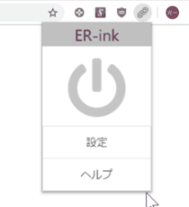
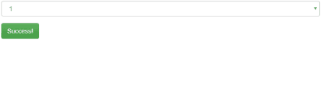
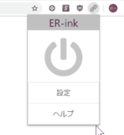
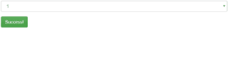

これは何？
まとめサイト閲覧していてリンクを何回も行き来した経験はあるよね？
その煩わしい思いから解放してくれるのがこのER-INKだ！
アプリのポップアップから電源ボタンをクリックして、たらい回しリンクを回避、本命のページにたどり着けるよ！
使い方
・アプリのポップアップの電源ボタンをクリックするとオンオフの切り替えができるよ！簡単だね！※デフォルトではオフ(灰色)
・設定からリンクをたどる回数を設定できるよ
まとめサイト閲覧していてリンクを何回も行き来した経験はあるよね？
その煩わしい思いから解放してくれるのがこのER-INKだ！
アプリのポップアップから電源ボタンをクリックして、たらい回しリンクを回避、本命のページにたどり着けるよ！
・アプリのポップアップの電源ボタンをクリックするとオンオフの切り替えができるよ！簡単だね！※デフォルトではオフ(灰色)
・設定からリンクをたどる回数を設定できるよ
